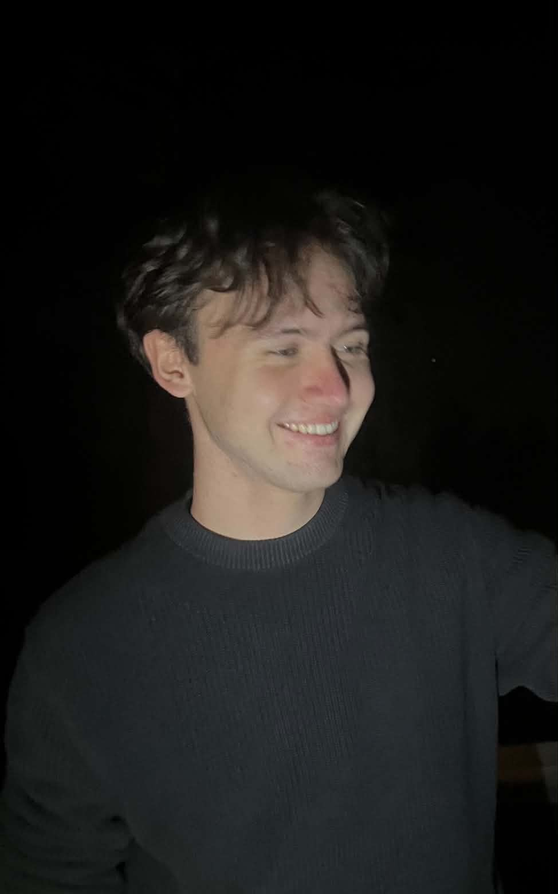

Praksisoppgaven:
Oppgaven består av to hoveddeler, Nettise og Wavey.
Nettsiden: Gruppen har fått i oppgave å oppusse hjemmenettsiden
til E-waves, hvor både nye og erfaren medlemsbedrifter skal kunne melde seg opp,
se arrangementer, og følge opp nyheter. Oppussingen foregår hovedsaklig på hovedsiden.
Wavey: Denne delen av praksisprosjektet går innenfor å videreutvikle
Wavey, som er Navigasjonschatboten til E-waves. Her vil gruppen forbedre
innloggingsystemet, slik at det er bedre ovesikt, sikkerhet, og å gjøre det mulig
for medlemmer å laste opp dokumenter.
Ewaves:
Ewaves er et nettverk for e-handel og nettbutikker over Sørlandet og er en del av IT-klyngen Digin. Formålet med nettverket er å styrke kompetanse, vekst og sammarbeid gjennom å knytte medlemsbedriftene sammen. Dette gjøres mulig via aktiviteter og arrangementer som blir tilbytt. Aktivitetene varierer fra bedriftsbesøk, seminarer, og prosjekter for medlemsbedrifter. Nettverket består av over 40 bedrifter i Agder, inkluderende kjente bedrifter som Blivakker og Stormberg.
Praksis-teamet:
Teamet består av to studenter, Emil og Matias
Emil
Student på UiA - IT og Informasjonssystemer 3. år.
Ved siden av å være student har jeg deltidsjobb i restaurant bransjen. Her har jeg fått
mye erfaring i sammarbeid, og har gode problemstillings kunnskap.
Gjennom studiet har jeg fått mye kunnskap innenfor Objekt Orientert Programmering, hvor jeg
har primært programert i C#. I tilleg er jeg erfaren med Frontend allere før studiet.
I mellom 4. og 5. semester har jeg gjennomgått grunnleggende kunnskap innenfor Wordpress
som er nødvendig for praksisprosjektet vårt.

Matias
Student på UiA - IT og Informasjonssystemer 3. år.
Ved siden av å være student har jeg erfaring fra hjemmesykepleien. Her har jeg fått
god erfaring med samarbeid under press, tydelig kommunikasjon, og å ta ansvar for
oppgaver på egen hånd.
Gjennom studiet har jeg opparbeidet meg kunnskap innenfor programmering med Python
og SQL. I tillegg har jeg erfaring med Wordpress, som er nyttig for praksisprosjektet vårt.
